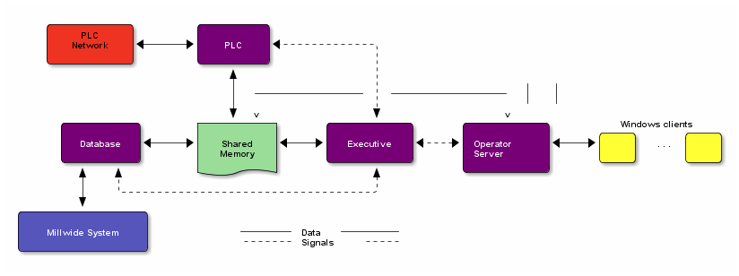
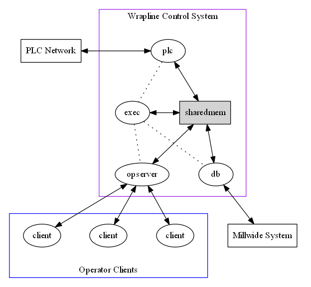
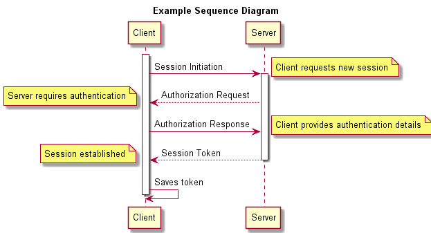

目录
概述
org画图主要有以下相关模块
- artist-mode/picture-mode: 生成 ascii 图
- ditaa: 根据ascii图生成图片
- graphviz: 生成关系图
- plantuml: 基于graphiz之上,生成uml图
当采用 org-mode 时,可以使用 #+BEGIN_SRC #+END_SRC 标签生成ditaa,graphiz,plantuml图
配置及相关准备工作
语言设置
设置 org-babel-load-languages 变量 增加允许语言设置, ditaa 为 t
(org-babel-do-load-languages 'org-babel-load-languages '(;; other Babel languages (ditaa . t) (plantuml . t) (dot . t) (xxx . t) ))
这样设置后,可以按照以下方式调用
#+BEGIN_SRC ditaa :file some_filename.png :cmdline -r -s 0.8 #+BEGIN_SRC plantuml :file export-file-name :cmdline -charset UTF-8
如果不进行以上设置,通过begin_src将不会成功,需要按照以下方式调用:
#+begin_ditaa test.png -r -s 0.8
不进行安全性提示
生成图像时不予提示
(setq org-confirm-babel-evaluate nil)
建立 yas 快捷键
- dita
#+BEGIN_SRC ditaa :file ${1:export-file-name} :cmdline -r -s 0.8
${0}
#+END_SRC
- dot
#+BEGIN_SRC dot :file ${1:export-file-name}.png :cmdline -Kdot -Tpng
title ${0}
#+END_SRC
- uml
#+BEGIN_SRC plantuml :file ${1:export-file-name} :cmdline -charset UTF-8
title ${0}
#+END_SRC
jar 包路径设置
(setq org-plantuml-jar-path
(expand-file-name "~/.emacs.d/scripts/plantuml.jar"))
(setq org-ditaa-jar-path (format "%s%s" (if *cygwin* "c:/cygwin" "")
(expand-file-name "~/.emacs.d/elpa/contrib/scripts/ditaa.jar")) )
预览图像
(add-hook 'org-babel-after-execute-hook 'bh/display-inline-images 'append) ; Make babel results blocks lowercase (setq org-babel-results-keyword "results") (defun bh/display-inline-images () (condition-case nil (org-display-inline-images) (error nil)))
此时输入 C-c C-c 生成图像, C-c C-x C-v 开关内联图像显示
ditaa
参考
实现原理
先通过artist-mode或者picture-mode生成ascii文本,然后
通过调用java 包 ditaa.jar 生成 图片,并将图片插入到 html 代码中. 如以下示例,实际调用的脚本是
java -Dfile.encoding=UTF-8 -jar /path/ditaa.jar -r -s 0.8 c\:/Users/ADMINI\~1/AppData/Local/Temp/babel-124Lpi/ditaa-124xjt e\:/gitroot/doc/org/share/emacs/ditaa_test.png
当前版本为 0.9
ditaa使用说明
| param | long param | desc |
|---|---|---|
| -e | –encoding | 指定编码 |
| -E | –no-separation | 嵌套矩形是否分隔,缺省有分隔,设置后无 |
| -r | –round-corners | 圆角矩形 |
| -s | –scale | 矩形大小 ,比如 0.8 |
| -o | –overwrite | 如果有同名文件覆盖 |
| -S | –no-shadows | |
| -A | –no-antialias | |
| -v | –verbose | |
| -h | –help | |
| -t | –tabs | |
| -h | –html |
图形规则
- 圆角矩形: 用/ \ 作为图形的四个顶角
- color
- cxxx xxx别表示RGB
- 也可以采用预设的值: cRED cGRE cBLK cBLU cPNK cYEL
- tags
在矩形内部标记:
- {d} document
- {s} storage
- {io} input/output
- dashed lines 虚线 竖虚线 :: : 横虚线 :: =
- *
- 矩形内的文本: o :: · 号
示例
#+begin_src ditaa :file test_ditaa.png :cmdline -r -s 0.8
+-----------+ +---------+
| PLC | | |
| Network +<------>+ PLC +<---=---------+
| cRED | | c707 | |
+-----------+ +----+----+ |
^ |
| |
| +----------------|-----------------+
| | | |
v v v v
+----------+ +----+--+--+ +-------+---+ +-----+-----+ Windows clients
| | | | | | | | +----+ +----+
| Database +<----->+ Shared +<---->+ Executive +<-=-->+ Operator +<---->|cYEL| . . .|cYEL|
| c707 | | Memory | | c707 | | Server | | | | |
+--+----+--+ |{d} cGRE | +------+----+ | c707 | +----+ +----+
^ ^ +----------+ ^ +-------+---+
| | |
| +--------=--------------------------+
v
+--------+--------+
| |
| Millwide System | -------- Data ---------
| cBLU | --=----- Signals ---=--
+-----------------+
#+END_SRC
生成结果

graphviz
- homepage 当前版本 2.28.0
示例
#+BEGIN_SRC dot :file test_graphviz.png :cmdline -Kdot -Tpng
digraph G {
size="8,6"
ratio=expand
edge [dir=both]
plcnet [shape=box, label="PLC Network"]
subgraph cluster_wrapline {
label="Wrapline Control System"
color=purple
subgraph {
rank=same
exec
sharedmem [style=filled, fillcolor=lightgrey, shape=box]
}
edge[style=dotted, dir=none]
exec -> opserver
exec -> db
plc -> exec
edge [style=line, dir=both]
exec -> sharedmem
sharedmem -> db
plc -> sharedmem
sharedmem -> opserver
}
plcnet -> plc [constraint=false]
millwide [shape=box, label="Millwide System"]
db -> millwide
subgraph cluster_opclients {
color=blue
label="Operator Clients"
rankdir=LR
labelloc=b
node[label=client]
opserver -> client1
opserver -> client2
opserver -> client3
}
}
#+end_src

plantuml
- homepage 当前版本 7952
配置
示例
#+BEGIN_SRC plantuml :file test_uml.png :cmdline -charset UTF-8 title Example Sequence Diagram activate Client Client -> Server: Session Initiation note right: Client requests new session activate Server Client <-- Server: Authorization Request note left: Server requires authentication Client -> Server: Authorization Response note right: Client provides authentication details Server --> Client: Session Token note left: Session established deactivate Server Client -> Client: Saves token deactivate Client #+END_SRC

致谢
感谢 Open Source 提供的 cnblogs 插件, 并非常热心的及时解决了图片的发送问题!


昵称：
不改了 退出登录 订阅评论
[Ctrl+Enter快捷键提交]
【推荐】融云即时通讯云－豆果美食、Faceu等亿级APP都在用
【福利】你是我的好朋友，我要送你个天猫红包
· 跨界项目：基于Intel平台的Chromebook有望运行Windows软件
· 微软：升级Win10失败 免费送笔记本一台！
· 2016机器人世界杯：不容错过的精彩摔倒瞬间
· 微信Windows 10应用现身Windows商店
· 微软iOS应用迁移工具再进化：全新UIKit API
» 更多新闻...
· 编程的智慧
· 写给初学前端工程师的一封信
· 抽象：程序员必备的能力
· 编程同写作，写代码只是在码字